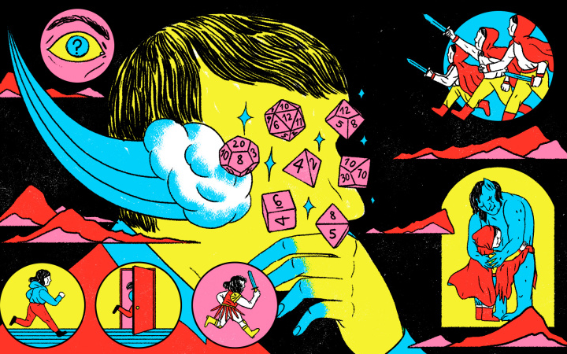

História > Criação
Saiba tudo sobre nosso RPG
por Fabio Henrique
10 de junho de 2021
O que é
O Saturday Night Adventures são sessões de RPG inspiradas em Dungeons & Dragons (5ª Edição) indroduzidas no cenário de Forgotten Realms com uma história pré-pronta. O mestrante da partida cria uma drama com algumas referências já predefinidas, porém, possui liberdade para adicionar suas particularidades. Como a criação de NPCs, diálogos e side questions) Essa parte é bem trabalhosa para o mestre, e dependendo da rolagem dos dados e das escolhas dos jogadores, ele pode ser surpreendido com improvisos inesperados, o que pode ser muito interessante para a dinâmica do jogo. Por fim, o mestrante é o responsável também por atuar na introdução de mapas, fichas de inimigos, atuação de personagens secundários e narração de eventos.
Papel dos Jogadores
Cada um dos jogadores é encaregado de desenvolver a construção de seus personagens, é possível consultar o Livro do Jogador para buscar inspirações. Há dezenas de Raças, Classes, Traços, Equipamentos, Personalidades, Antecedentes... para serem explorados.
O começo
Os aventureiros da cidade de Neverwinter aceitam prestar serviços a um trio anões irmãos, chamados Gundren, Tharden e Nundro, da família anã Buscapedra. O serviço em questão era muito simples: conduzir em segurança uma carroça com mantimentos de mineração até um cidadezinha distante chamada Phandalin. Os anões não explicam muito bem o que é, apenas mencionam que fizeram uma grande descoberta, mas que teriam de ir um dia antes dos aventureiros chegarem com a carroça até a cidade para resolverem assuntos particulares. Quem o escolta é Sildar Hallwinter, um guerreiro humano. Os comandos dos anões eram: levar em segurança a carroça com os mantimentos até uma loja chamada Barthen Provisões, em Phandalin, onde eles lá estariam a espera do grupo.
Phandalin
Pontos importantes da cidade
Phandalin
Há rumores de que existe uma lendária espada escondida em algum canto da cidade
Estalagem Pedra da Colina
Pedra da Colina
Fique atento aos valores cobrados pelos pratos
A estalagem Pedra da Colina é propriedade de um simpático taverneiro chamado Toblen, sua esposa Trilena e seu filho Pip. O local é frequentado constantemente pelos moradores, principalmente por anões mineradores. A cerveja artesanal e o porquinho acridoce são especialidades da casa.
Barthen Provisões
Barthen Provisões
Talvez seja necessário repetir mais de uma vez o que quer na loja, Barthen está desenvolvendo surdez
Localizada ao norte de Phandalin próxima a Trilha Triboar, Barthen Provisões é o estabelecimento do velho e gentil Elmar Barthen. Nela os jogadores podem encontrar suprimentos, como poções de cura, itens mágicos, cordas e ração, por exemplo.
Gigante Adormecido
Gigante Adormecido
Se quiser arrumar encrenca, este é o lugar certo
Bar que foi tomado pela gangue MarcaRubra, é um local sujo e perigoso para os habitantes comuns, tem que ter certa coragem e estômago forte se quiser passar por lá.
Mansão Tresendar
Mansão Tresendar
Os habitantes de Phandalin chamam o local de Mansão, mas é mais parecido com um castelo.
Pode ser interessante explorá-la futuramente.
Mansão da família real Tresendar, foi abandona após os ataques de Orcs liderados por Uruth Ukrypt no ano de 951 CV. Atualmente abriga os mercenários MarcaRubras, o uso dos porões é maior, mas as atividades exercidas lá são um mistério.
Escudo de Leão
Escudo de Leão
Escolha as melhores armas para sua aventura
Essa é a loja de armas e armaduras. Podemos negociar equipamentos adquiridos durante a campanha, bem como barganhar com jeitinho para conseguirmos descontos com a adorável Linene Greywind, jovem proprietária do estabelecimento.
Além disso, temos:
- A temida Caverna Onda do Eco
- Forja das magias
- Neverwinter
- Castelo Dentefino
- Pomar de maçãs de Edermath
- Posto de Troca de Halia Thornton
Vários locais, raças, missões e recompensas. Dessa forma, podemos ver que o que não falta na Mina Perdida de Phandelver são tesouros e diversão. Para saber mais sobre todos eles e se divertir, basta iniciar a sua própria aventura. E se estiver com alguma dúvida basta deixar seu comentário abaixo, dessa forma sua aventura pode se tornar ainda mais divertida!